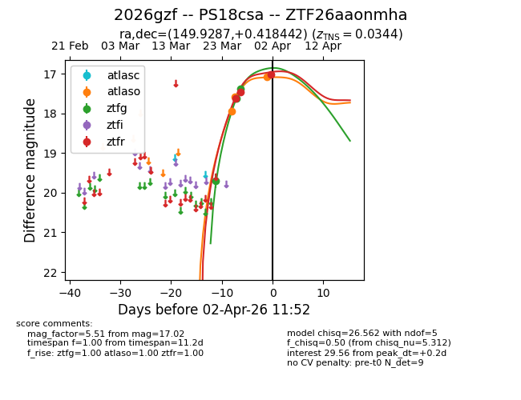
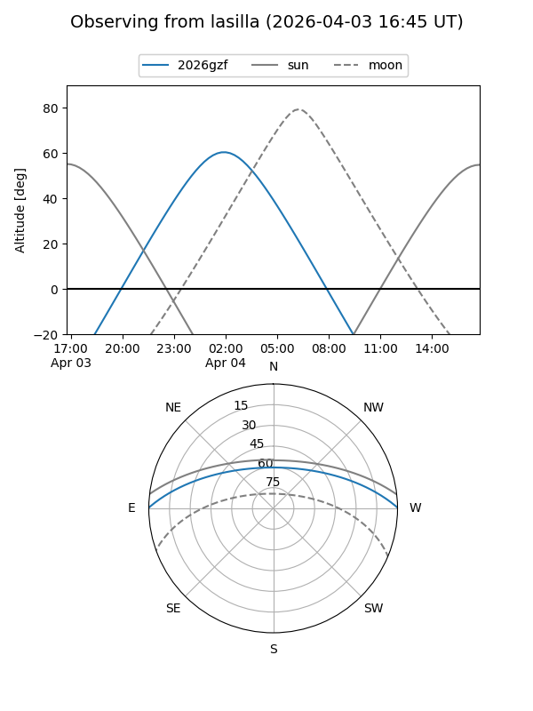
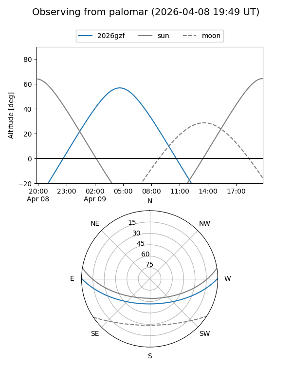
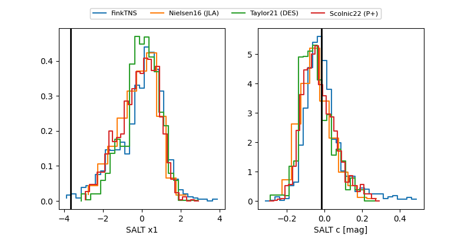

2026gzf
Target 2026gzf at 2026-04-02 12:00
Aliases and brokers:
FINK: link
Lasair: link
ALeRCE: link
TNS: link
YSE: link
alt names
ZTF26aaonmha (ztf,fink_ztf)
2026gzf (tns,yse)
PS18csa (panstarrs)
Coordinates:
equatorial (ra, dec) = 149.9287,+0.41844
equatorial (HMS+DMS) = 09:59:42.88,+00:25:06.39
galactic (l, b) = (238.6020,+40.91519)
Flags:
Photometry:
last atlaso=17.08, ztfg=17.38, ztfr=17.02
3 atlaso, 3 ztfg, 3 ztfr detections
Lightcurve

Visibility


Additional plots
